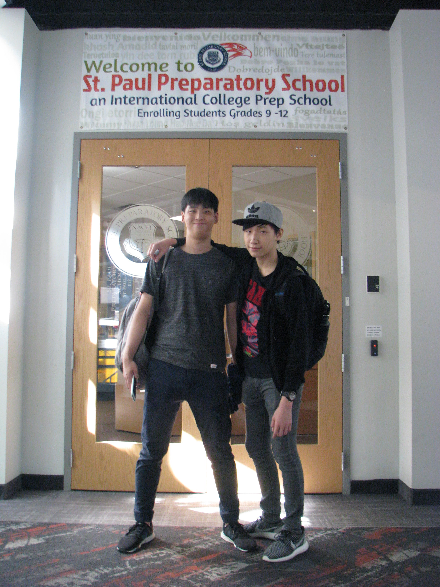
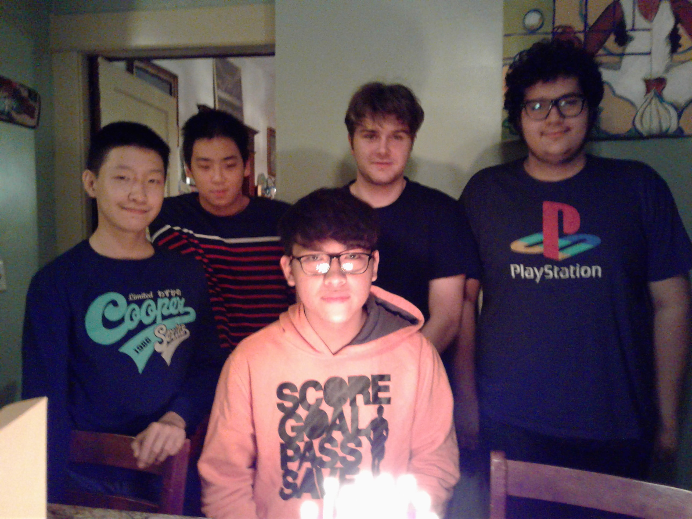
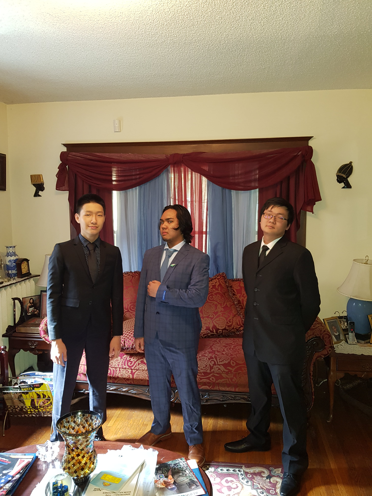
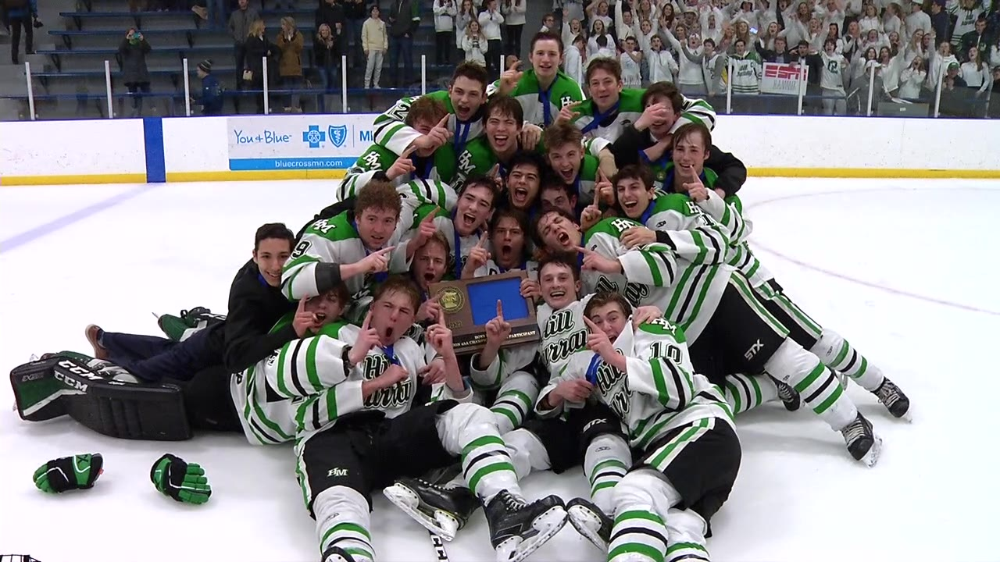

At 13 years old, I flew from Bangkok, Thailand to Saint Paul, Minnesota on a 24+ hour flight
I attended Saint Paul Preparatory School, which had over 90% international students.


This was my last year at SPP as it was closing due to financial issues.
However, I went to Prom for the first time!

Transferred to Hill-Murray School, a Catholic school in the suburbs on Saint Paul, MN.
The beginning of senior year was stressful due to college apps, but second semester was blast... until coronavirus
We won our first Boys State Hockey Tournament in years!
